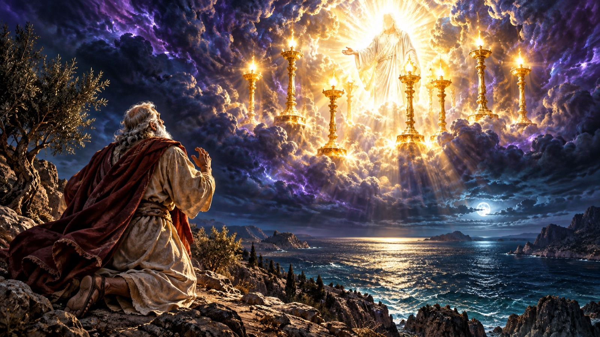
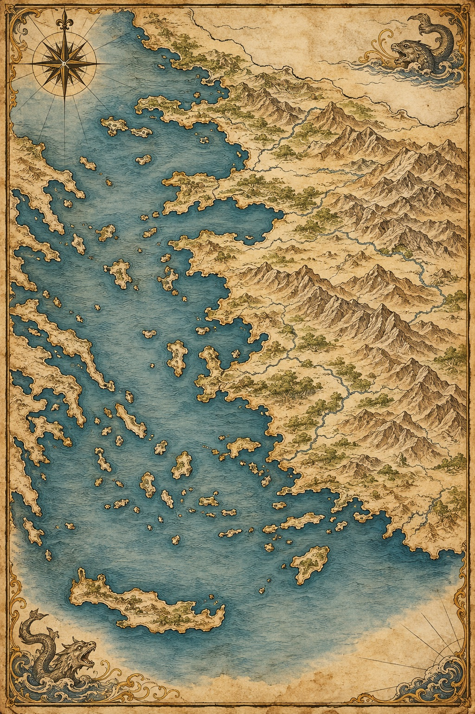

The seven churches of Asia, the vision that opens the book, and the city that closes it — mapped and laid out in the order Scripture actually gives them.
Revelation 1–3Revelation 4–13Revelation 21

Where This Fits
Written in the same era as Paul's later letters, near the end of the apostolic age — but its vision looks past all nine of those sections, to how the whole story ends.
Tap a church to read its own message, straight from the text: what it got right, what it was called to fix, and what was promised to it.

Aegean Sea Roman AsiaPositions are a reading guide to relative location, not a surveyor's map. Patmos marks where John received the vision (Revelation 1:9).
You scored of 7. Want to double-check one? Scroll up and tap its pin on the map.
✦ ✦ ✦Each letter closes with a promise to "the one who overcomes" — the vision that opens next shows what's actually behind that promise: the throne room standing behind all of history.
Four movements, in the order the book gives them. Tap each to open it.
John is on the island of Patmos, exiled "because of the word of God and the testimony of Jesus" (1:9). On the Lord's Day he is caught up in the Spirit and turns to see a voice like a trumpet.
What he sees is Christ standing among seven golden lampstands, holding seven stars, with a sharp two-edged sword from his mouth and a face like the sun shining in full strength (1:12–16). He falls down as dead; Christ tells him not to fear and gives the command that opens the whole book: "Write the things which you have seen, and the things which are, and the things which will take place after this" (1:19).
The seven stars and seven lampstands are explained directly in the text: they are the seven churches (1:20) — which is why the letters to Ephesus, Smyrna, Pergamum, Thyatira, Sardis, Philadelphia and Laodicea come immediately after, in Part One above.
A door stands open in heaven. John is shown a throne, and One seated on it with the appearance of jasper and carnelian, a rainbow like an emerald encircling it (4:2–3). Around the throne: 24 elders on their own thrones wearing crowns, and four living creatures full of eyes, each with six wings, who never stop declaring "Holy, holy, holy" (4:8).
A scroll sealed with seven seals appears in the right hand of the One on the throne — and no one in heaven or earth is found worthy to open it, until a Lamb appears who looks as if slain, standing at the center of the throne (5:6). The Lamb takes the scroll, and heaven erupts: elders, living creatures, and finally every creature fall down to worship, because the Lamb was slain and by his blood purchased people for God from every tribe, tongue, people and nation (5:9).
This scene is the hinge of the whole book: everything that follows — the seals, the trumpets, the bowls — happens because this scroll gets opened.
The Lamb opens the seals one at a time. The first four release the four horsemen, each riding out as its seal breaks:
The fifth seal reveals the souls of martyrs under the altar, crying out to be avenged and told to wait a little longer (6:9–11). The sixth brings a great earthquake and cosmic upheaval — sun gone black, moon like blood, stars falling (6:12–14) — followed by a pause in chapter 7 in which 144,000 are sealed and a vast multitude from every nation stands before the throne.
The seventh seal opens in 8:1 with silence in heaven — and it is this seal that in turn introduces the seven trumpets, continuing the pattern of judgment unfolding in sevens.
A woman clothed with the sun, the moon under her feet, is about to give birth, while a great red dragon with seven heads waits to devour her child (12:1–4). The child is caught up to God's throne; war breaks out in heaven, and the dragon — identified directly in the text as "that serpent of old, called the Devil and Satan" (12:9) — is thrown down to earth, enraged and pursuing the woman and her offspring.
Unable to reach them, the dragon gives his authority to a beast rising out of the sea, with seven heads and ten horns, that the world worships (13:1–4). A second beast then rises from the earth, working signs on the first beast's behalf and forcing everyone to receive a mark on hand or forehead in order to buy or sell — the mark of the beast, tied to its number, 666 (13:11–18).
This is the darkest point of the book's sequence — which is exactly why the New Jerusalem, below, lands the way it does.
✦ ✦ ✦The dragon and the beast are the darkest point of the book on purpose — that's exactly what makes the city below, descending at the very end, land the way it does.
Revelation 21 — the city that answers everything that came before it.
The city is described as a perfect cube — equal in length, width and height (Revelation 21:16).
A city, coming down
John sees it "coming down out of heaven from God, prepared as a bride adorned for her husband" (21:2) — described in exact, measured terms, not vague glory-language.
The 12 foundation stones named in Revelation 21:19–20 — each layer of the city's wall is built from one. Tap each stone to discover its name and place in the wall.
0 of 12 foundation stones discovered
Each of the twelve foundations is adorned with one of these precious stones (21:19–20), and each of the twelve gates is a single pearl (21:21). The main street of the city is "pure gold, like transparent glass" (21:21).
What the city does not have is just as deliberate as what it has: no temple, because "the Lord God Almighty and the Lamb are its temple" (21:22); and no sun or moon, because "the glory of God illuminates it, and the Lamb is its light" (21:23). Its gates stand open day and night — there is no night there (21:25).
Chapter 22 adds the river of the water of life flowing from the throne, and the tree of life on either side of it, bearing twelve kinds of fruit, one for each month — its leaves for the healing of the nations (22:1–2).